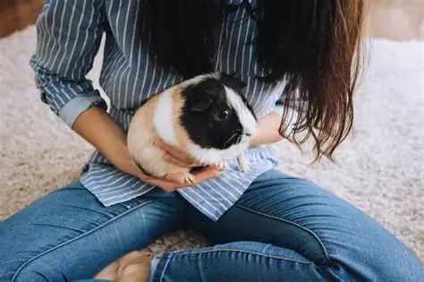
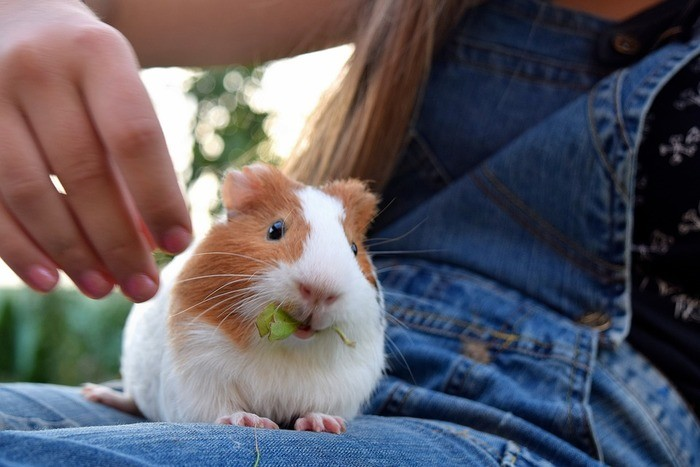
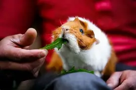

Centro Armonía Animal
¡BIENVENIDOS A LA MEJOR TERAPIA INTEGRAL CON COBAYAS DE COMPAÑÍA!
Nuestra terapia asistida con animales está enfocada y diseñada para mejorar la calidad de vida de nuestros pacientes a través de la interacción con cobayas de compañía especialmente entrenadas para este propósito. Nuestra actividad terapéutica en psicología con animales, como las cobayas, se basa en la interacción guiada entre el paciente, el profesional y el animal.
¿Por qué elegir cobayas? ¿Y qué función cumple nuestra terapia?
Las cobayas son animales sociales, dóciles y fáciles de manejar, lo que las convierte en excelentes compañeras para la terapia. La función que cumple nuestra terapia con cobayas es ayudar principalmente a reducir el estrés, mejorar la autorregulación emocional y fomentar habilidades sociales. Su carácter tranquilo facilita un ambiente seguro donde las personas pueden relajarse, expresar emociones y practicar el cuidado y la empatía.


